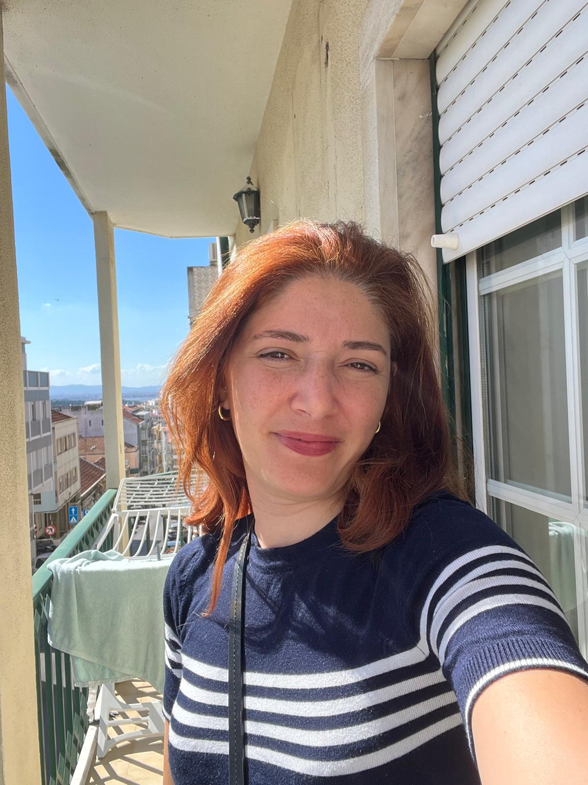
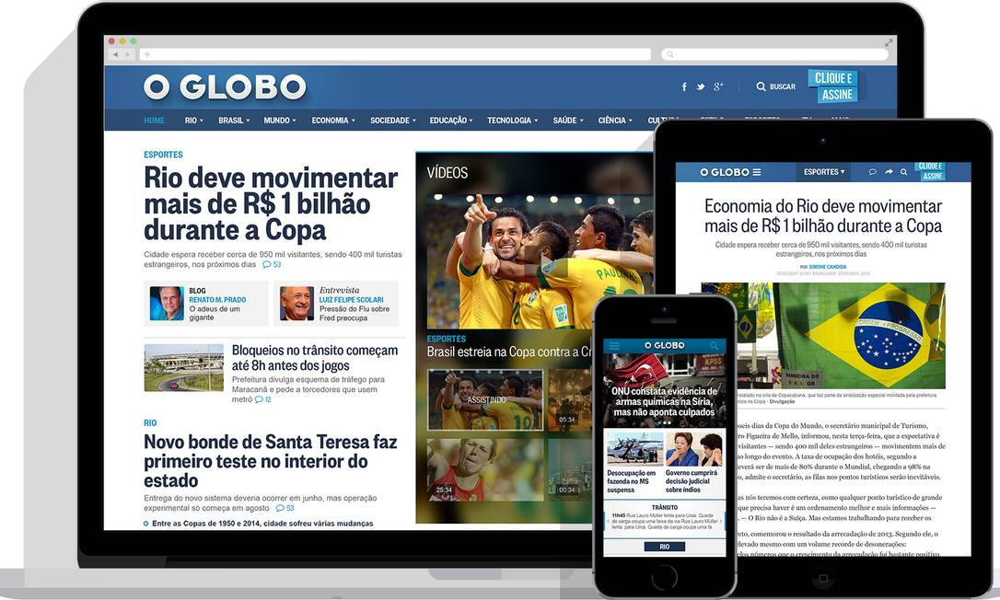
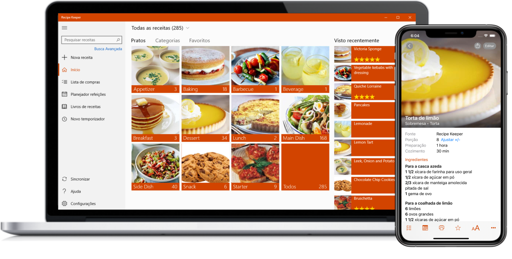
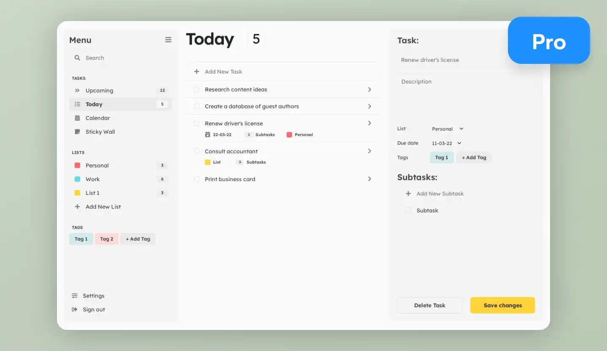

Sobre Mim

Sou estudante de programação com foco em Front-End, interessado em criar interfaces intuitivas, funcionais e bem estruturadas. Trabalho com HTML, CSS, JavaScript, React e TypeScript, explorando diferentes abordagens para transformar ideias e designs em experiências digitais claras e eficientes.
Tenho também contacto com conceitos de Inteligência Artificial, o que me permite compreender melhor como integrar lógica, automação e novas tecnologias em soluções modernas. Gosto de aprender fazendo, experimentar novas ferramentas e evoluir continuamente enquanto programador.
A minha formação em enfermagem deu-me uma base sólida em pensamento crítico, empatia e responsabilidade — competências que hoje aplico no desenvolvimento de software, especialmente na criação de interfaces centradas no utilizador e na atenção ao detalhe.
Neste site partilho alguns dos meus projetos e o meu percurso na área de Front-End, refletindo a minha evolução técnica e criativa. Procuro uma oportunidade de estágio ou primeira experiência profissional onde possa continuar a aprender, crescer e contribuir ativamente em equipa.
Educação
- Enfermeira - FACENE - 2010
- HTML, CSS, JavaScript - Curso Online Eu ProgrAmo - 2021
- Front-end + Inteligência Artificial - Upskill - 2025
Progresso em Curso
Projetos


